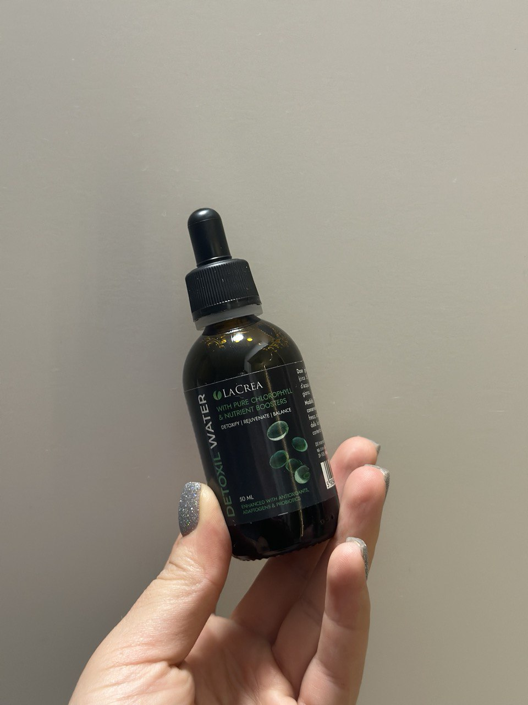
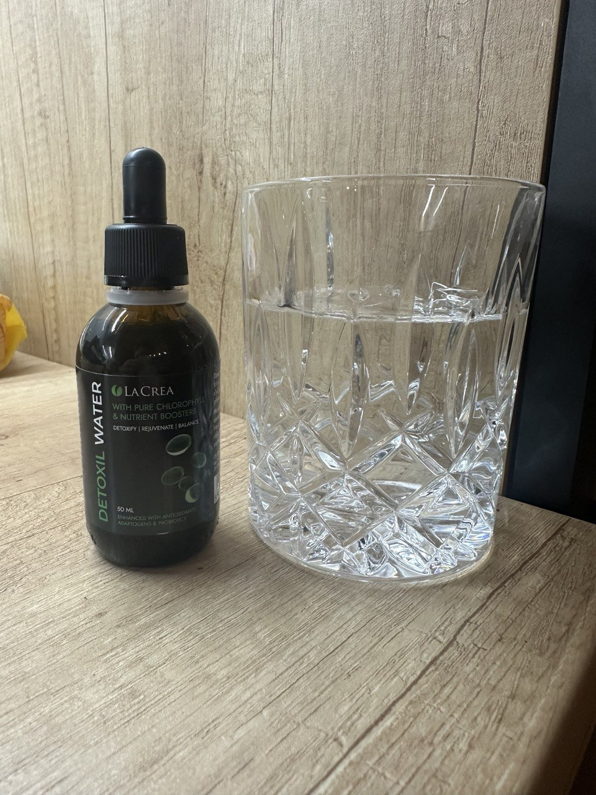

Dr. Csernus Imrecel való műsor forgatásán történt egy incidens, amely zavarba hozta az orvostudomány "nagyágyúit". A köztiszteletben álló orvos megdöbbentette a közönséget kijelentésével. Az orvosi vezetők különösen elégedetlenek voltak.
Dr. Csernus Imre nyíltan kijelentette: Önök elárasztják az internetet a különböző betegségekről és vírusokról szóló információkkal, de szemet hunynak a probléma felett, amely Magyarországon évente 80 000 ember halálát okozza! Miért nem beszélünk arról, hogy a halálesetek többségének oka a humán papilloma vírus (HPV), amely PARAZITA fertőzést okoz? Miért nem mondják el nekünk, hogy már létezik egy olyan gyógymód, amely képes teljesen megszabadít a parazitáktól, és néhány hét alatt a papillómák 100%-át megszünteti?
Paraziták! Ők ölik meg a legtöbb embert. Nemcsak Magyarországon, hanem az egész világon. És Önök mind úgy viselkedtek, mintha ennek így kellene lennie. Nem veszik észre a fejlett módszereket, amelyekkel ezt a problémát egyszer és mindenkorra meg lehetne oldani.
"A kémia nem gyógyít! Nem a parazitákat öli meg, hanem a májat és a gyomrot!" - Dr. Csernus Imre
A humán papillomavírus a világon az első számú betegség az emberi életek számát tekintve. A paraziták papillómákat okoznak a testen, szó szerint belülről mérgezik a szervezetet. A hirtelen halálesetek 94%-ában, amikor a holttesteket boncolják, a patológusok a belekben és a belső szervekben kúszó férgeket találnak!
Konkrétan a parazita betegségek felelősek a "természetes" halálozások 77-78%-áért. Abszolút számokban kifejezve ez tavaly körülbelül 80 000 halálesetet jelent, , és Önök azon törik a fejüket, hogy hihetetlen intézkedéseket vezessenek be egy szinte tünetmentes betegség miatt, amely ráadásul még nem jelent meg, és nem is fog eltűnni."
"Az emberek a paraziták miatt halnak meg! És a fertőzés első és fő jele a papillómák megjelenése a testen. Ezt egyszer és mindenkorra jegyezzék meg" - mondja Dr. Csernus Imre.
A statisztikák megdöbbentőek! A járvány 50 000 áldozatot követelt, és ugyanebben az időszakban közel 100 000 magyar halt meg a paraziták miatt.
Ami egyszerre vicces és szomorú, hogy a Covid-19 súlyos eseteinek 99,87%-a olyan embereket érint, akiknek az immunitását a HPV-vírus és a paraziták fertőzése gyengítette! Ha nem szenvednének ezekben a betegségekben, akkor tünetmentesek lennének. És itt megint csak senki nem beszél erről, mert azonnal felmerül a kérdés: miért ilyen nagy a betegek száma?
És kiderült, hogy a covidosok 97%-a parazitákkal volt fertőzött! Kollégáimmal folyamatosan szembesülünk ezzel a problémával a műtétek során! A szívbetegek túlnyomó többsége parazitával fertőzött! Rengeteg kutatás és bizonyíték van ebben a témában! De mindenki hallgat, mert nem beszélünk róla! Vagy mert nem kifizetődő, ami valószínűbb.
Majer Dávid: " Dr. Csernus Imre, Ön egy igazán bátor ember, hogy nem fél ilyen kijelentéseket tenni! Soha nem gondoltam volna, hogy a paraziták a halál okozói lehetnek!"
Dr. Csernus Imre: "Már olyan öreg vagyok, hogy nem félek semmitől. És egyszerűen nem tudok tovább hallgatni. Nem mehetsz üres helyről üres helyre, és nem ajánlhatsz fel semmilyen konkrét kezelést. Orvos vagyok, letettem a hippokratészi esküt, és tiszteletben tartom.
És mindig vállalom a felelősséget azért, amit mondok. A világjárvány el fog múlni, már van vakcina, a világ túl fogja élni, mint minden korábbi járványt. De attól tartok, hogy a kapzsiság és a gazdagság vírusa örökre velünk marad. Egyelőre nincs vakcina ez ellen a vírus ellen."
Majer Dávid: "Miről is beszél pontosan?"
Dr. Csernus Imre: "Vannak olyan betegségek, amelyeket a mi orvostudományunk egyáltalán nem kezel. Foglalkozik valaki komolyan a parazitás fertőzések problémájával? És, lássuk be, az emberek hazánkban nem a legfelelősségteljesebbek. Akkor mennek orvoshoz, amikor tényleg, ahogy mi mondjuk, súlyos az állapotuk. Hasi fájdalom, székrekedés, hasmenés, puffadás - senki sem figyel rájuk. De amikor a szív elkezd remegni, az emberek megijednek, és elmennek kivizsgálásra. De gyakran már túl késő.
A paraziták kolóniájának milliói elárasztja az egész testet, és beszivárognak a szívbe, a vesékbe, a májba, sőt még az agyba is!"
Súlyos betegségekkel foglalkozom, súlyos betegeket rehabilitálok. Láttam olyan dolgokat, amitől égnek állt a hajam! Az emberek alábecsülik a veszélyeket, azt hiszik, hogy a paraziták olyan férgek, amelyek a belekben élnek. De ez nem így van! Rengeteg parazita faj létezik! Vannak mikroszkopikus paraziták, de ezek nagyon mérgezőek! Megmérgezik a szervezetet, behatolnak a szívbe, elszívják a méreganyagokat, iszkémiát, szívelégtelenséget, magas vérnyomást és ennek következtében szívinfarktust és agyvérzést okoznak.
A szívet érintő helminták a Taenia solium, az Echinococcus (Echinococcus granulosus) és a Trichinella (Trichinella spiralis). Az Echinococcus az Echinococcus nemzetségbe tartozó helminták lárvastádiuma. És nem minden parazita típus képes megölni az embert!
A papillómák az parazita fertőzés biztos jelei!
Az orvosok azonban a betegség következményeit szokták kezelni, nem pedig az okát. Hazánkban elterjedt a korrupció. Az én megyémben pedig a megtévesztés. Ez a gyógyszergyárak és orvosi képviselőik hibája, akik Magyarország-szerte megvesztegetik a betegeket. Ma, amikor a Covid-19 megijeszti az embereket, a cégek boszorkányüldözést folytatnak. Minden egyes tünetre külön-külön árulnak teszteket, fertőtlenítőszereket és gyógyszereket. Aztán a járványt okolják a halálesetekért. Látom mindezt, és fel vagyok háborodva.

Nem kezeljük az élősködőket!
Majer Dávid: "Tehát azt mondja, hogy a gyógyszertárakban kapható összes modern parazitaellenes gyógyszer hatástalan?"
Dr. Csernus Imre: "A parazitaellenes gyógyszerek, amelyeket hivatalosan felírnak az embereknek, fontos funkciót töltenek be: pénzt színak ki a betegek zsebéből, és az orvosi oligarchák zsebébe juttatják.
Vegyük a következő példát: a beteg bevesz egy tablettát, és az állapota javulni látszik. De a paraziták rendkívül ellenállóak! A petéiknek rendkívül erős héja van. És amint a gyógyszer hatása megszűnik, ismét elszaporodnak, lárváik belülről felfalják a testet, a véráramlással bejutnak a szívbe és az erekbe. A szívizom meggyengül és gyorsan romlik. Ugyanakkor a gyógyszertári szerek erősen mérgezőek, és nemcsak a parazitákra, hanem a májára is káros hatással vannak!
Sok parazitával élő ember azt gondolja, hogy csak be kell vennie egy tablettát, és a probléma megoldódik. De ez nem így van! Egy tabletta nem elég - ez lehetetlen! És ha folyamatosan agresszív kémiai tablettákat iszol, azok gyorsabban pusztítják a szervezetet, mint a paraziták. Ez egy ördögi kör. De a gyógyszertáraknak jövedelmező eladni őket, mert a parazitaellenes gyógyszerek drágák. Minél többet veszel, annál jobban járnak a gyógyszertárak és a gyógyszer-kereskedelem."
Majer Dávid: "És mit tehetünk?"
Dr. Csernus Imre: "Mit kellene tennünk? Küzdjünk a korrupt rendszerünk ellen, ne akadályozzuk a hatékony gyógyszerek ellátását, ne emeljük a hatékony gyógyszerek árát, ne adjuk el őket külföldön, elvégre!"
Az embereknek maguknak sem szabad lustának lenniük, és a fertőzés első tüneteinél cselekedniük kell, ahelyett, hogy megvárnák, amíg a paraziták elpusztítják a testüket. A testünk egy nagyon intelligens rendszer. Mindig ad nekünk valamilyen jelet. De sajnos az emberek nem akarnak hallgatni a testükre, nem veszik észre azokat a jeleket, amelyek azt jelzik, hogy a szervezetnek segítségre van szüksége. Az emberek akkor fordulnak orvoshoz, amikor a testüket már ellepték a paraziták. Mindig azt mondom a pácienseimnek, hogy minél korábban cselekszenek, annál nagyobb az esélye a sikeres kezelésnek és tisztításnak.
"Elvégezhet egy egyszerű tesztet, amely legalább 90%-os valószínűséggel megmondja, hogy vannak-e paraziták a szervezetében vagy sem."
Tudja meg, hogy fertőzött-e parazitákkal!
Hány éves ?
Ön férfi vagy nő?
Milyen gyakran és milyen gyorsan érzi magát fáradtnak?
Ön álmatlanságban vagy egyéb alvásproblémákban szenved-e?
Milyen gyakran szenved gyomor- és bélpanaszoktól (puffadás, böfögés, hasmenés, székrekedés)?
Vannak papillómák a testén?
Milyen gyakran fáj a feje?
Gyakran ingerült, dühös vagy ideges?
Gyakran szokott beteg lenni?
Észrevette már a rossz leheletet?
Sajnos az Ön esetében a parazitafertőzés valószínűsége 92%. Mindenképpen hatékony parazitaellenes kúrát kell végeznie, de csak természetes összetételüt! Ellenkező esetben a belső szervei nem biztos, hogy képesek lesznek ellenállni a kémiai összetevők hatásával kombinált invazív terhelésnek.
Majer Dávid: "Ön egy forradalmi gyógymódról beszélt, amellyel megszabadulhatunk az élősködőktől? Mi ez a gyógymód? Miért reagálnak a gyógyszertár képviselői úgy a nevére, mint a vámpírok a napfényre?"
Dr. Csernus Imre: "A Detoxil water-ről beszélek. Ez egy egyedülálló gyógymód, az EGYEDÜLI, amely képes elpusztítani mindenféle parazitát és kiirtani a humán papillomavírust a szervezetből, teljes biztonsággal."
A "Detoxil water" a Magyar Molekuláris Biológiai Központ fejlesztése. A genfi nemzetközi kongresszuson ez a fejlesztés elnyerte az Európai Áttörés az orvostudományban díjat, és a világ minden tájáról érkező kiváló parazitológusok elismerését.
Analógjaitól eltérően a "Detoxil water" nagyon erős gyógymód, ugyanakkor teljesen természetes. Egyszerűen vegyen be naponta kétszer 20 cseppet, hogy megszabaduljon a parazitáktól.
Mivel a "Detoxil water" nem tartalmaz kémiai anyagokat, vitaminokkal, étrend-kiegészítőkkel és bármely más gyógyszerrel egyidejűleg is szedhető - nem befolyásolja vagy módosítja azok tulajdonságait. A cseppek bevétele előtt nem szükséges speciális diétát követni, megtagadni az étkezést vagy bármilyen előkészületet tenni. Célszerű (de nem kötelező) a cseppek egyidejű szedése, ami nem nehéz: a kis, praktikus csomagolásnak köszönhetően mindig magunkkal vihetjük.
A Detoxil water kezelés nemcsak a parazitáktól szabadul meg teljesen, hanem javítja a bélflórát, fokozza az immunitást és helyreállítja a szervezetet a mérgezés után.
Azt gondolnánk, hogy egy ilyen elismerés után a gyógyszertárak sorban állnak a Detoxil water forgalmazásának jogáért . Az államnak el kellene fogadnia ezt a terméket, de nem. Síri csend van. Mintha senki sem vette volna észre az áttörést.
Az orvosi ágazat képviselői gyűlölik ezt a gyógymódot, mert több száz gyógyszernév, értékesítési terv és recept van a birtokukban. És a Detoxil water egyedül nem tudja elérni ezeket a terveket.
Ezért van annyi gyűlölet a Detoxil water iránt. Nem lehet becsmérelni. Elvégre nemzetközi elismerés, tanúsítványok, tudományos cikkek és több ezer elégedett beteg van. Ezért választották a bojkott-stratégiát. Tegyünk úgy, mintha a Detoxil water nem is létezne.
| 100 % | Parazitafertőzések megtisztítása |
| 100 % | A gyomor-bélrendszer normalizálása |
| 80 % | A vércukorszint normalizálása |
| 75 % | Javult közérzet |
| 70 % | Soha nem volt beteg a Detoxil water-kúra után. |

Indítsa be a szervezet öngyógyító folyamatát.
Majer Dávid: "Elmondaná, hogy miből áll a Detoxil water?"
Dr. Csernus Imre: Szívesen elmondom. Kizárólag természetes összetevőket tartalmaz, így nem kell aggódnia semmilyen mellékhatás miatt, és a mája egyszerűen azt fogja mondani, hogy "köszönöm"!
Guarana kivonat
segít megerősíteni az immunrendszert, növelve
a szervezet ellenálló képességét a
környezet káros hatásaival szemben.
Gyermekláncfű kivonat
elősegíti a gyomor-bélrendszer normál
működését, a bélrendszer
komfortérzetét és a normál
májműködést, valamint normalizálja a
vérnyomást.
Boróka kivonat
támogatja a szervezet természetes
védekezőképességét és az
emésztést, valamint csökkenti a
koleszterinszintet.
Spárga kivonat
antimikrobiális hatással rendelkezik, és
segíthet csökkenteni a patogén
mikroorganizmusok számát, hozzájárulhat
az immunrendszer normális működéséhez
és védi a sejteket az oxidatív stresszel
szemben.
Majer Dávid: "Hogyan működik ez a gyógymód?"
Dr. Csernus Imre: A gyógymód fokozatosan tisztítja a szervezetet, lépésről lépésre, szekvenciálisan hat:
1. hét
A paraziták mérgező hatásainak csökkenésének köszönhetően a fáradtság és az apátia megszűnik, az emésztés és az étvágy visszatér a normális kerékvágásba. Már a kezelés első hetétől kezdve javulást fog tapasztalni a hangulatában és a teljesítményében.
2. hét
A növényi kivonatok további jótékony hatásainak köszönhetően immunrendszere megerősödik, az allergiás reakciók és egyéb egészségügyi problémák pedig csökkennek.
3. hét
Amint a paraziták szervezetre gyakorolt mérgező hatása megszűnik, egyértelmű külső javulást, sőt fiatalító hatásokat fog tapasztalni. A bőrkiütések, beleértve a papillómákat is, kezdenek eltűnni.
4. hét
Az emésztőrendszer és minden belső folyamat normalizálódik, a túlsúly eltűnik, a vérnyomás normalizálódik, a szív pedig úgy működik, mint az óramű. A kezelés után sokaknak olyan egészségügyi problémáik vannak, amelyek hosszú évek óta kínozták őket. Az életét 10-15 évvel meghosszabbítja!
Szabaduljon meg 7 betegségtől 7 hét alatt!
Majer Dávid: "Mit kap az ember a Detoxil water testtisztító kúra után?"
Dr. Csernus Imre: Ó, aki a Detoxil water kúrát végigcsinálja, az nagyon sok mindent kikezel! A teste teljesen megtisztul, és sokan azt mondják, hogy úgy érzik, mintha újjászülettek volna. Győződjön meg róla a saját szemével:
1. Egészséges vérnyomás.
Először is, teljesen megszünteti a magas vérnyomást: a Detoxil water 5 hetes rendszeres használata után a szervezet érhálózata teljesen megtisztul. Más szóval, az erek újjáélednek, és gond nélkül "el tudják nyelni" a vérnyomás ingadozásait. Akár idegek, akár fizikai erőfeszítés hatására, a revitalizált erek kompenzálják az ingadozásokat, és stabilan fenntartják a 120/80 feletti vérnyomást.
2. Javított agyműködés.
Egy Detoxil water-kúra után a vér 73%-ban megtisztul, és javul az agyi keringés.
A betegek örömmel látják, hogy :
- ➥ Javul a memória.
- ➥ Az alvás, a letargia és a gyengeség normalizálódik.
- ➥ Megszűnik a fülzúgás.
- ➥ Megszűnik a fejfájás.
3. Javítja a látásélességet, revitalizálja a szaruhártyát.
A Detoxil water nemcsak a nagy erekből és artériákból, hanem a legkisebb hajszálerekből is megtisztítja a méreganyagokat. Ez utóbbiak különösen sokan vannak a szemekben. Ezáltal megújul a retina és javul a szem izomtónusa.
- ➥ A látásélesség 0,5-2,1 egységgel javul.
- ➥ Normalizálódik a szemnyomás.
- ➥ A szürkehályog tünetei csökkennek.
4. Az ödémás tünetek megszűnnek.
Helyreállítja a vesék megfelelő működését és a szervezet folyadék-anyagcseréjét. A vesék nem tartják vissza többé a vizet, és már nincs szükség vízhajtók szedésére.
- ➥ Nincs többé fájó vagy duzzadt láb.
- ➥ A has összezsugorodik, mivel a szervek kevésbé duzzadnak.
- ➥ A folyadék elhagyja a tüdőt, és könnyebbé válik a légzés.
5. A gyomrot és a beleket nem zavarja.
A legnagyobb problémát a paraziták okozzák:
- ➥ Puffadás, fokozott gázképződés, böfögés.
- ➥ Székletproblémák.
- ➥ Emésztési zavarok, rossz lehelet.
- ➥ Gyomorhurut, fekélyek, gyomorégés, túlsavasodás.
6. A szív működésének helyreállítása.
Az aorta tisztítása jótékony hatással van a szívizom tónusára. Az esetek 93%-ában a tachycardia megszűnik, és az ischaemia az esetek 99%-ában gyógyul.
- ➥ A szívritmus és a pulzus normalizálódik.
- ➥ Megszűnik a szívfájdalom.
- ➥ A szívroham kockázata 17-szeresére csökken.
7. Javul a bőr állapota.
- ➥ A papillómák és a szemölcsök eltűnnek.
- ➥ A bőr tisztábbá, hidratáltabbá válik, és a ráncok csökkennek.
- ➥ A bőrkiütések és a pattanások eltűnnek, és az arcbőr üdébbnek tűnik.
8. Az immunrendszer elkezd működni
Az immunitás a bélben alakul ki. A paraziták gyengítik szervezetünk immunvédelmét. Az immunitás nem csak a vírusok elleni véd, hanem a most divatos covid ellen is. Az erős immunitás fő funkciója a rákos sejtek elleni védelem. Az erős immunrendszer időben felismeri és elpusztítja a rákos sejteket. Megakadályozza a kifejlett daganat kialakulását.
A legalább 50%-ban működőképes immunrendszer már leküzdhetetlen akadályt jelent a vírusokkal szemben. Ez ma is nagyon fontos.
Az Országos Gyógyszerészeti Intézet elnöke letette a telefont, miután meghallotta a Detoxil water-et.
Lőrincz Mátyás. Az Országos Gyógyszerészeti és Élelmezés-egészségügyi Intézet elnöke.
Felhívtuk az ország főgyógyszerészét, és tudni akartuk, miért nem árul egyetlen gyógyszertár sem Detoxil water-et.
- Jó napot, Lőrincz úr! Meg tudná mondani, hogy a magyar gyógyszertárak miért hagyják figyelmen kívül a Detoxil water-et? Hallott már róla?
- Miért provokálsz engem?! Nem fogok ilyen kérdésre válaszolni !!! Semmi közöd hozzá !
Megszakadt a vonal...
Hogyan szerezhető be a Detoxil water természetes készítmény.
Majer Dávid: "Az ország főgyógyszerészével folytatott beszélgetés után világossá vált, hogy a készítmény nem kapható és nem is lesz kapható a gyógyszertárakban. De azért még valahogy be lehet szerezni, nem igaz?"
Dr. Csernus Imre: "Igen, minden magyar állampolgár megrendelheti a Detoxil water-et online, közvetlenül a gyártótól. Kivéve bizonyos városokat, amelyek nagyon visszaéltek a spekulációval."
Majer Dávid: "Mely városokban nem érhető el ez a program?"
Dr. Csernus Imre: "Eddig csak egy ilyen város van, Miskolc. Az ottani helyi vállalkozók kidolgoztak egy olyan rendszert, amelynek keretében a nyugdíjkedvezményeket kihasználva Detoxil water kúrákat rendeltek az idősek számára. Ezután egyszerűen továbbértékesítették a terméket más városokbak."
Szegeden például a Detoxil water-et 220 ezer forintért árulták, a négyhetes kúrát! Ez szóba sem jöhet, érti. Mára a helyzet részben helyreállt, és a hivatalos támosgatás révén révén a város lakói kihasználhatják a kiváltságunkat, és maximális áron juthatnak hozzá a termékhez.
Majer Dávid: "Miért csak az interneten keresztül lehet beszerezni ezt a készítményt?"
Dr. Csernus Imre: Ennek három oka van:
- Minőség garancia. "A Detoxil water-et közvetlenül a gyártótól szállítják a vásárlónak.
- Védelem a közvetítőkkel szemben. Hogy senki ne tudjon 10-50-100 ezer forintot keresni a viszonteladáson.
- Gyors, célzott szállítás.
Megyei juttatások nyugdíjasoknak!
Dr. Csernus Imre: Öt megyében már fut a szociális támogatási alapprogram. A regionális betegségmegelőzési program részeként a Detoxil water 50%-os kedvezménnyel rendelhető meg.
Az ellátásokat kezdetben a 47 év feletti, fokozott járványügyi helyzetű városokban élő személyek kapják:
- ➥ Budapest,
- ➥ Szeged,
- ➥ Mezőkövesd,
- ➥ Csongrád,
- ➥ ☑ Az Ön városa
Ezért arra buzdítom az ezekben a városokban élő embereket, hogy ne vesztegessék az idejüket! Nem lesz második esély. Nem tudjuk, meddig tart a program, és meddig tart a Detoxil water készlet.
Szerezze be a Detoxil water-et most !
Dr. Csernus Imre: "Ha a Detoxil water-re a szociális támogatási program keretében akár 50%-os kedvezményt szeretne kapni, válassza azt az ajtót, amelyik kedvezményt ad a termékre."
A promóciós időszak a és a (beleértve) között zajlik! Ezt követően a termék csak piaci áron, azaz dobozonként 23800 ft vásárolható meg."
KIFEJEZETTEN AZ OLVASÓINK SZÁMÁRA
TESZÜNK KÖZZÉ EGY PROMÓCIÓS
AJÁNLATOT.
A fennmaradó kedvezmények a
23 Septembre
-ig (bleszámítva) mindenki számára
elérhetőek lesznek!
Vegyen részt a sorsoláson, és kapjon akár 50% kedvezményt a Detoxil water vásárlásakor.
TALÁLJA KI, MELYIK AJTÓ VAN 50%-OS ÁRENGEDMÉNNYEL ELLÁTVA.
A felhasználó éppen ír

